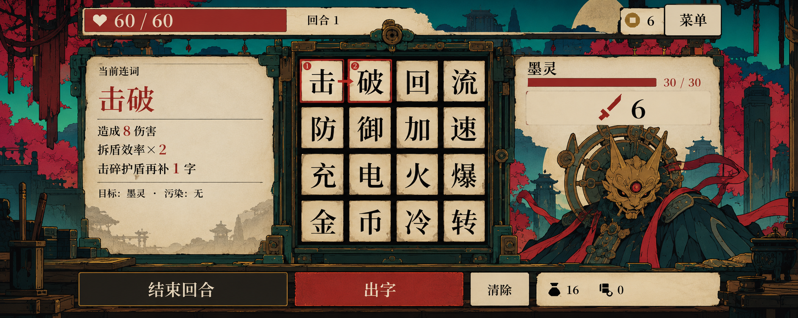

按窗口缩放；点击图片打开原图。
02 / 去 UI 场景
空间与材质
检查石地连通、岸线和前后遮挡。与整屏图共用美术方向，不承诺逐像素一致或对应某个实际地图种子。导出：1920×1080 · 1280×720。
03 / 地形模块设定
拼接与厚度
设计脚印 128×80，2×绘制基准 256×160。此页用于定形，独立瓦片仍需人工制版与无缝检查。
04 / 交互元素设定
轮廓、占格与状态
设施以一格为交互锚点，屋檐和碑冠可以向上越界。占格、接地点及生产状态以设计说明和资产清单为准。
查看用户提供的画风基准
